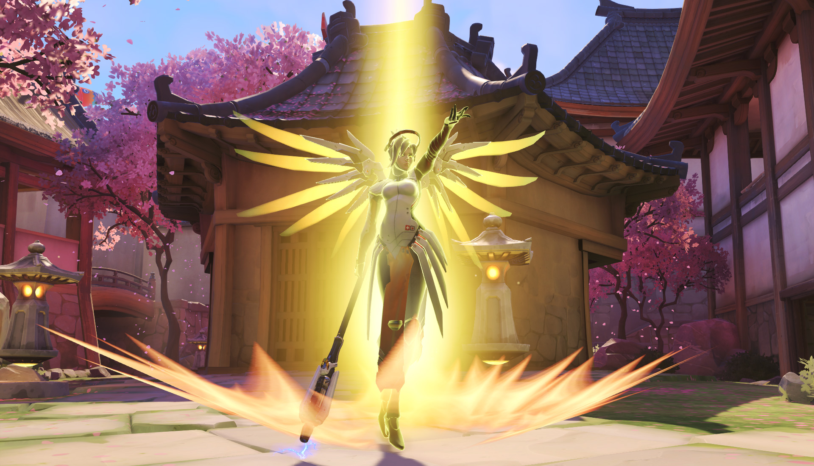

Ange projette un des deux rayons sur un allié. En maintenant les rayons, elle peut soigner l’allié ciblé ou augmenter les dégâts qu’il inflige.
Ange tire une salve avec son arme de poing.
Ange vole vers un allié ciblé. Elle peut ainsi rejoindre rapidement ses coéquipiers pour mieux les assister dans les moments cruciaux.
Ange ranime un allié mort avec la totalité de ses points de vie.
Grâce aux propulseurs de son armure Valkyrie, Ange peut ralentir sa vitesse de chute et descendre de n’importe quelle hauteur.
Confère à Ange la capacité à voler. Ses capacités sont améliorées.
Chopper, Bastion, Chacal, D.Va, Fatale, Hanzo, McCree, Pharah, Reinhardt, Soldat 76, Winston et Zarya
Les capacités offensives presque inexistantes d'Ange ne lui permettent pas de contrer un héros en particulier.
D.Va, Fatale, Genji, Pharah, Soldat 76, Winston, Zenyatta et Tracer